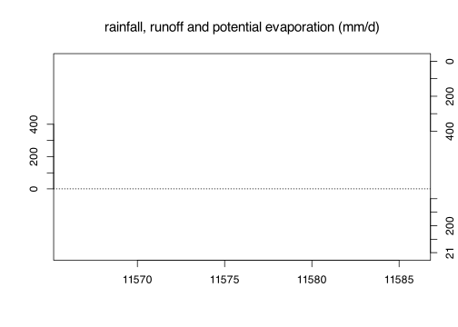
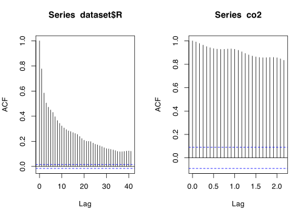
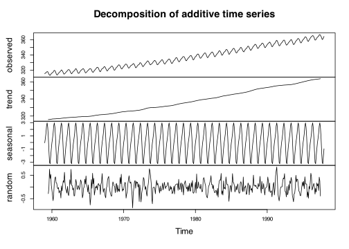
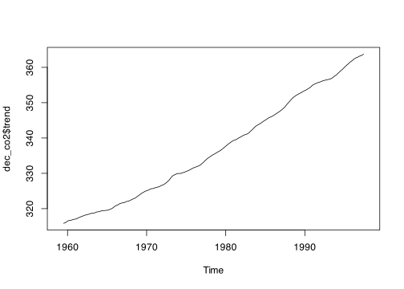
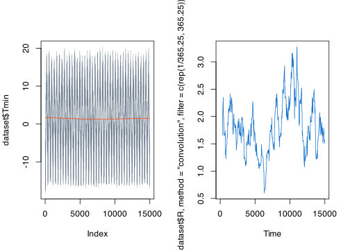
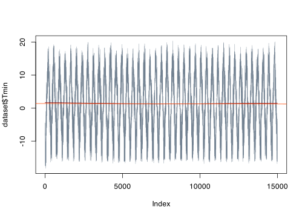

Kód
?tsts()Funkce pro základní statistické zpracování časových řad opět nalezneme v balíčku stats.
Mnoho dalších nalezneme například studiem příslušného CRAN Task View.
ts()
?tsBudeme pracovat se dvěma datovými sadami:
co2, kterou nahrajete pomocí funkce data()dataset <- readRDS("data/data.rds")[1:15000,]
data("co2")Využijeme znalostí z Kapitola 5
hydroplot <- function(srazka, vypar, odtok, ...) {
plot(odtok,
ylim = c(-max(odtok),
2*max(odtok)),
yaxt = "n",
xlab = "",
ylab = "",
...)
axis(2,
at = round(signif(seq(0, max(odtok), length = 5), 2)))
abline(h = 0, lty = 3)
par(new = TRUE)
plot(x = time(srazka),
y = as.numeric(srazka),
col = "dodgerblue4",
type = "h",
ylim = rev(c(0, 3*max(srazka))),
xlab = "",
ylab = "",
axes = FALSE, ...)
axis(4,
at = round(signif(seq(0, max(odtok), length = 5), 2)))
par(new = TRUE)
deltaet <- max(vypar) - min(vypar)
plot(x = time(vypar),
y = as.numeric(vypar), col = "salmon1", type = "l",
ylim = c(min(vypar), max(vypar) + 2.5*deltaet),
xlab = "",
ylab = "",
axes = FALSE, ...)
axis(4,
at = round(signif(seq(min(vypar), max(vypar), length = 5), 2), 1))
}
dframe <- ts(data = data.frame(P = 1:365, EP = 21:385,Q = 31:395),
start = c(2024, 1, 1),
frequency = 525960)
time(dframe)Time Series:
Start = c(2024, 1)
End = c(2024, 365)
Frequency = 525960
[1] 2024.000 2024.000 2024.000 2024.000 2024.000 2024.000 2024.000 2024.000
[9] 2024.000 2024.000 2024.000 2024.000 2024.000 2024.000 2024.000 2024.000
[17] 2024.000 2024.000 2024.000 2024.000 2024.000 2024.000 2024.000 2024.000
[25] 2024.000 2024.000 2024.000 2024.000 2024.000 2024.000 2024.000 2024.000
[33] 2024.000 2024.000 2024.000 2024.000 2024.000 2024.000 2024.000 2024.000
[41] 2024.000 2024.000 2024.000 2024.000 2024.000 2024.000 2024.000 2024.000
[49] 2024.000 2024.000 2024.000 2024.000 2024.000 2024.000 2024.000 2024.000
[57] 2024.000 2024.000 2024.000 2024.000 2024.000 2024.000 2024.000 2024.000
[65] 2024.000 2024.000 2024.000 2024.000 2024.000 2024.000 2024.000 2024.000
[73] 2024.000 2024.000 2024.000 2024.000 2024.000 2024.000 2024.000 2024.000
[81] 2024.000 2024.000 2024.000 2024.000 2024.000 2024.000 2024.000 2024.000
[89] 2024.000 2024.000 2024.000 2024.000 2024.000 2024.000 2024.000 2024.000
[97] 2024.000 2024.000 2024.000 2024.000 2024.000 2024.000 2024.000 2024.000
[105] 2024.000 2024.000 2024.000 2024.000 2024.000 2024.000 2024.000 2024.000
[113] 2024.000 2024.000 2024.000 2024.000 2024.000 2024.000 2024.000 2024.000
[121] 2024.000 2024.000 2024.000 2024.000 2024.000 2024.000 2024.000 2024.000
[129] 2024.000 2024.000 2024.000 2024.000 2024.000 2024.000 2024.000 2024.000
[137] 2024.000 2024.000 2024.000 2024.000 2024.000 2024.000 2024.000 2024.000
[145] 2024.000 2024.000 2024.000 2024.000 2024.000 2024.000 2024.000 2024.000
[153] 2024.000 2024.000 2024.000 2024.000 2024.000 2024.000 2024.000 2024.000
[161] 2024.000 2024.000 2024.000 2024.000 2024.000 2024.000 2024.000 2024.000
[169] 2024.000 2024.000 2024.000 2024.000 2024.000 2024.000 2024.000 2024.000
[177] 2024.000 2024.000 2024.000 2024.000 2024.000 2024.000 2024.000 2024.000
[185] 2024.000 2024.000 2024.000 2024.000 2024.000 2024.000 2024.000 2024.000
[193] 2024.000 2024.000 2024.000 2024.000 2024.000 2024.000 2024.000 2024.000
[201] 2024.000 2024.000 2024.000 2024.000 2024.000 2024.000 2024.000 2024.000
[209] 2024.000 2024.000 2024.000 2024.000 2024.000 2024.000 2024.000 2024.000
[217] 2024.000 2024.000 2024.000 2024.000 2024.000 2024.000 2024.000 2024.000
[225] 2024.000 2024.000 2024.000 2024.000 2024.000 2024.000 2024.000 2024.000
[233] 2024.000 2024.000 2024.000 2024.000 2024.000 2024.000 2024.000 2024.000
[241] 2024.000 2024.000 2024.000 2024.000 2024.000 2024.000 2024.000 2024.000
[249] 2024.000 2024.000 2024.000 2024.000 2024.000 2024.000 2024.000 2024.000
[257] 2024.000 2024.000 2024.000 2024.000 2024.000 2024.000 2024.000 2024.001
[265] 2024.001 2024.001 2024.001 2024.001 2024.001 2024.001 2024.001 2024.001
[273] 2024.001 2024.001 2024.001 2024.001 2024.001 2024.001 2024.001 2024.001
[281] 2024.001 2024.001 2024.001 2024.001 2024.001 2024.001 2024.001 2024.001
[289] 2024.001 2024.001 2024.001 2024.001 2024.001 2024.001 2024.001 2024.001
[297] 2024.001 2024.001 2024.001 2024.001 2024.001 2024.001 2024.001 2024.001
[305] 2024.001 2024.001 2024.001 2024.001 2024.001 2024.001 2024.001 2024.001
[313] 2024.001 2024.001 2024.001 2024.001 2024.001 2024.001 2024.001 2024.001
[321] 2024.001 2024.001 2024.001 2024.001 2024.001 2024.001 2024.001 2024.001
[329] 2024.001 2024.001 2024.001 2024.001 2024.001 2024.001 2024.001 2024.001
[337] 2024.001 2024.001 2024.001 2024.001 2024.001 2024.001 2024.001 2024.001
[345] 2024.001 2024.001 2024.001 2024.001 2024.001 2024.001 2024.001 2024.001
[353] 2024.001 2024.001 2024.001 2024.001 2024.001 2024.001 2024.001 2024.001
[361] 2024.001 2024.001 2024.001 2024.001 2024.001hydroplot(srazka = dframe[, "P"],
vypar = dframe[, "EP"],
odtok = dframe[, "Q"],
xlim = as.Date(c("2001-09-01","2001-09-21")))
title("rainfall, runoff and potential evaporation (mm/d)",
cex.main = 1.25,
font.main = 1)
Slouží k posouzení, zda časová řada obsahuje cyklickou či periodickou složku a také, zda je či není řadou náhodných čísel. Graficky je vyjádřena pomocí korelogramu.
par(mfrow = c(1, 2))
acf(dataset$R)
acf(co2)
Dekompozicí časové řady rozumíme rozklad na složky:
Předpokládáme, že řadu lze rozložit na součet složek
\[ Y_t =T_t +S_t +C_t +\epsilon_t, \]
dec_co2 <- decompose(co2)
plot(dec_co2)
plot(dec_co2$trend)
Ověřte, zda po dekompozici co2 residua \(\epsilon_t\) splňují definici bílého šumu tzn. mají nulovou střední hodnotu a konečný rozptyl a jsou nekorelované.
shapiro.test(dec_co2$random)
Shapiro-Wilk normality test
data: dec_co2$random
W = 0.99506, p-value = 0.1549mean(dec_co2$random, na.rm = TRUE)[1] 0.001743421var(dec_co2$random, na.rm = TRUE)[1] 0.07028142# ...par(mfrow = c(1, 2))
plot(dataset$Tmin, type = "l",
col = "slategray",
lwd = 0.5)
md1 <- loess(Tmin ~ na.omit(1:length(dataset$Tmin)),
data = dataset,
degree = 1)
lines(md1$fitted, col = "orangered")
plot(filter(x = dataset$R,
method = "convolution",
filter = c(rep(1/365.25, 365.25)),
sides = 1),
col = "dodgerblue3",
type = "l")
md2 <- lm(Tmin ~ DTM, data = dataset)
plot(dataset$Tmin, type = "l",
col = "slategray",
lwd = 0.5)
lines(md1$fitted, col = "darkred")
abline(coef(md2), col = "orangered")